Hi, I'm Daniel.
I like working on electronics.
daniel@0xDBFB7.com | dcorreia@asafersump.com | github.com/0xDBFB7
@0xDBFB7 on Twitter and Physics StackExchange
Experience:
Electronics:
Over 20,000 hours:
- PCB design[0] and DFM in Eagle and KiCAD
- Hardware development from in-house prototyping to volume production
- Power electronics
- Sensor systems development[1][7]
- Rapid prototyping & debugging
- Atmel AVR and SAM series processors
Over 1000 hours:
- STM32 series processors
Over 100 hours:
- Developed almost entirely alone
Software:
Over 10,000 hours:
- Python
- C
- C++
- Linux & Bash
- Git
Over 1000 hours:
- Organizing programming teams, pair programming, efficient, evidence-based programming techniques
- Virtualization (Docker, VirtualBox)
- Code quality and reliability - hardware-in-the-loop simulation, unit and integration testing
Over 100 hours:
- Make/Makefiles
- Basic cryptography - symmetric and asymmetric, hardware RNGs
Mechanical:
Over 5,000 hours:
- Mechanical design in FreeCAD and OpenSCAD
- CNC Machining:
- G-code
- LinuxCNC/EMC2
- MeshCAM
- Additive Manufacturing
Over 1000 hours:
- Manual machining; lathe turning, milling, etc
Over 100 hours:
- OpenSCAD
Some flagship projects as citations:
[1]: The SafeSump
CEO/CTO of four-year project to build a failure-resistant sump pump system to prevent basement flooding. Funded by a $37,000 Ontario grant and a $75,000 order.
- Custom redundant controller with a 120 Mhz SAM4S processor running ~10k lines of high-reliability HITL-simulated OTA-upgradable firmware
-
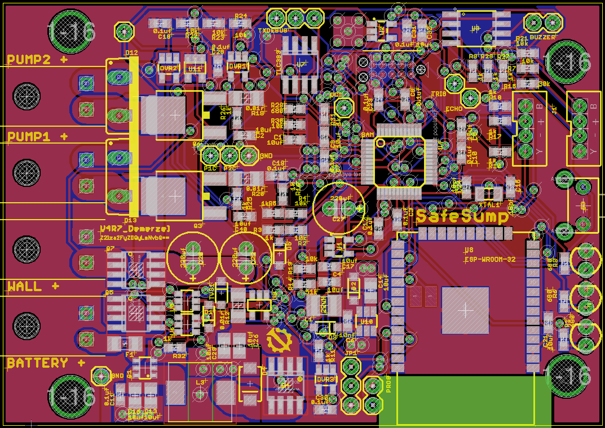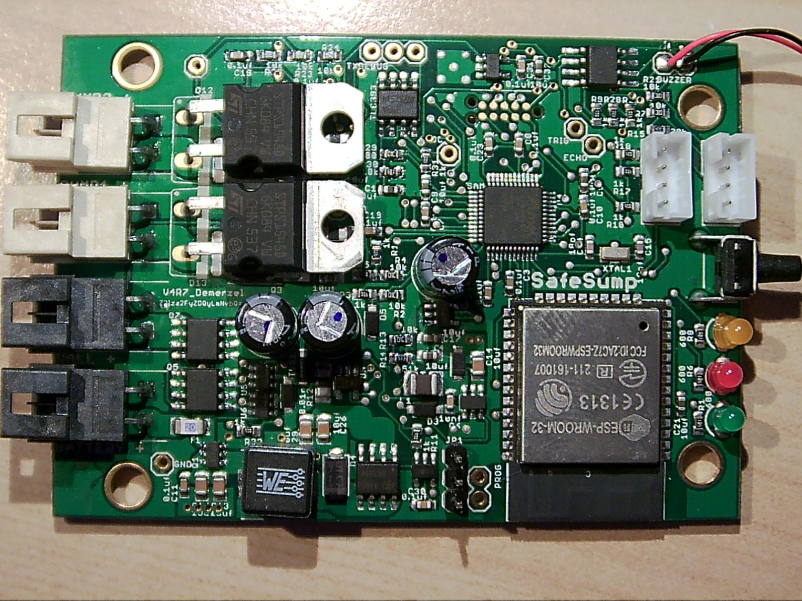
- Custom ultrasonic[7] and capacitive[8] sensors developed with regard to extreme MTBF and high fouling tolerance
-
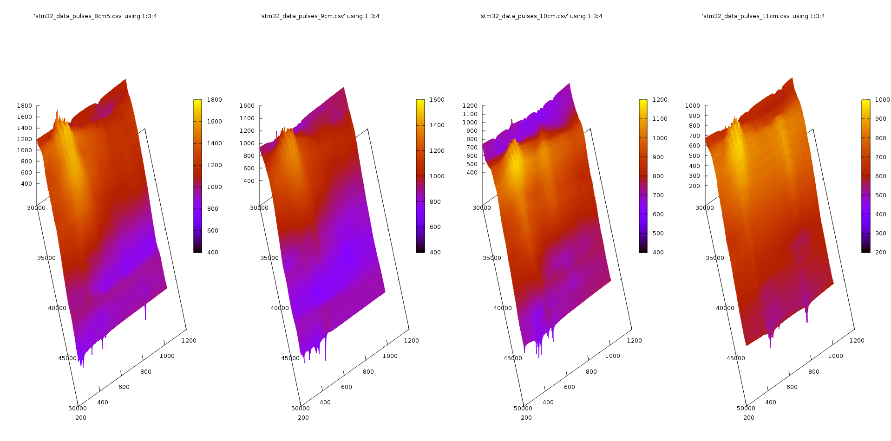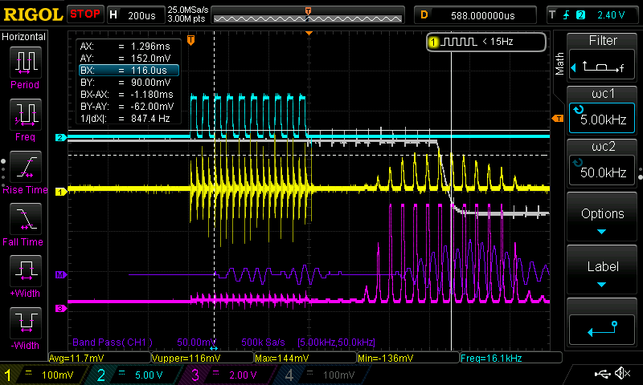
- A user-facing dashboard to view pump status and modify settings
- A secure server system capable of handling live updates from several hundred systems, and a scalable data storage system to replicate over 500 Gb realtime to three locations.
- Dozens of automated programming, testing, calibration and labelling systems
- Significant vertical integration - lab power supplies, electronic loads[5], pick-and-place machines[6a,b], reflow ovens, thermal cameras [4], paste stencils[3], prototype and production boards[3], and even soldering iron tips etc were all built in-house (then usually open sourced)
- Developed almost entirely alone - around 4
[2]: The -------------------
A project that's still under wraps.
Copious custom high-current, multi-kilovolt and high-vacuum paraphernalia
-
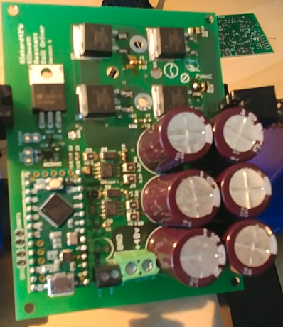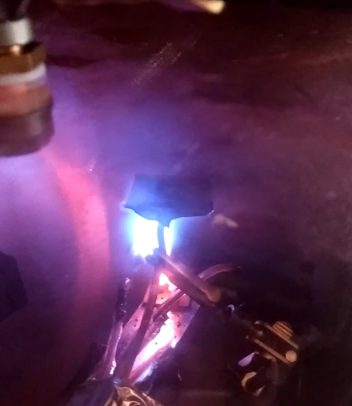
-
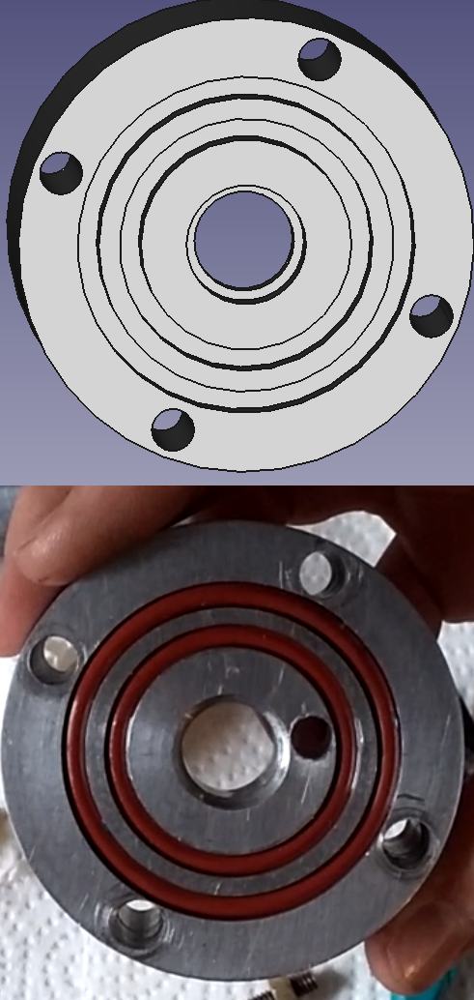
 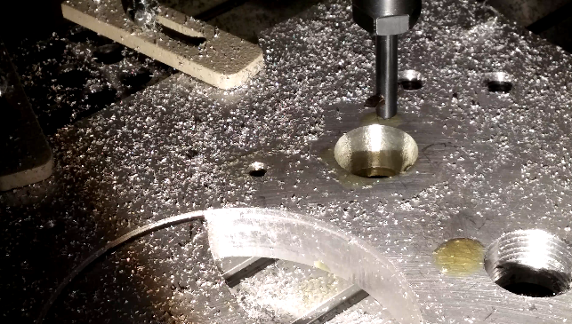
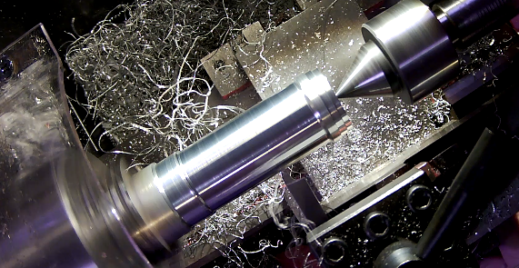
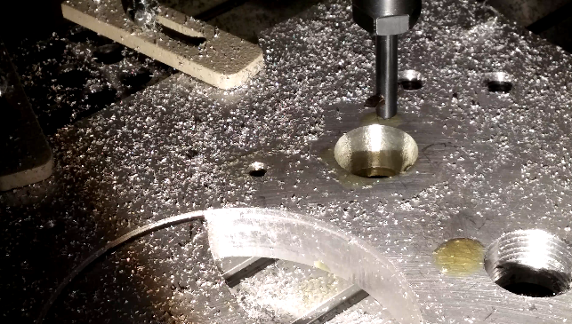
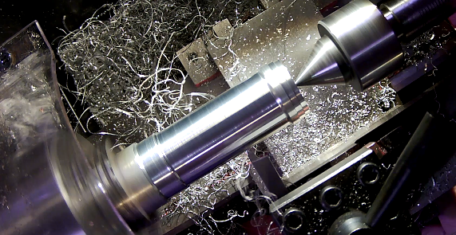
- Developed entirely alone
[3]: +60 more:
A high frequency load cell impulse measurement system for a defense contractor[8]
Ultratracker: a sub-millimeter ultrasonic object localization system[9]
Investigations into sonoluminescence[9]
Thermal glass poling and non-linear optics[9]
...
[0]: Primarily in eagle.
[1]: thesafesump.com (uh...for the record, wordpress was not my decision.)
[3]: https://github.com/0xDBFB7/LaserMaskPCB
[4]: /0xDBFB7/reprapthermalcamera
[5]: /0xDBFB7/SuperSimpleLoad/
[6a]: /0xDBFB7/kossel-pnp
[6b]: /0xDBFB7/EaglePnP
[7]: /0xDBFB7/UltimateUltrasonicAmplifier
This uses a custom boost converter and transducer driver
to drive a standard piezo transducer.
An 8-stage sallen-key band amplifier:
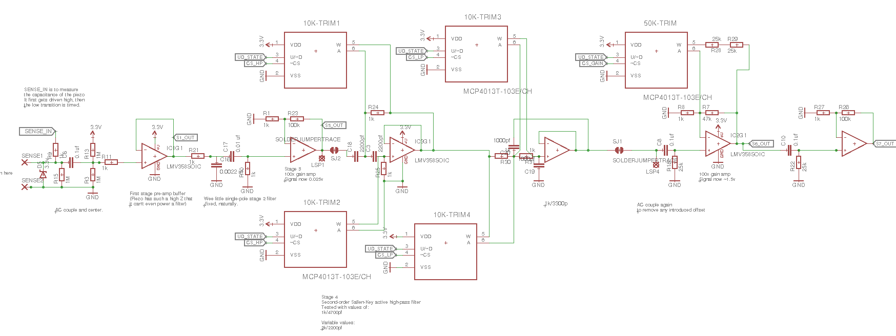
is then used to turn the
0.0005v acoustic reflection signal into a 5v pulse,
which is then processed further by an STM32.
[8]: NDA.
[9]:
For VR/automation applications;
This used a pair of 120 Mhz Atmel SAM4 ARM processors
with a deterministic-time Nordic 2.4Ghz RF link
to maintain ~0.5 microsecondclock sync,
while also transferring gyroscope and accelerometer data at 100hz.
A custom multiplexed frontend with notch filtering and a high-gain sub-millivolt
two-stage amplifier allowed the receiver to localize 8 sensor positions to a range of
2 meters, while still maintaining at least 0.4 mm accuracy.